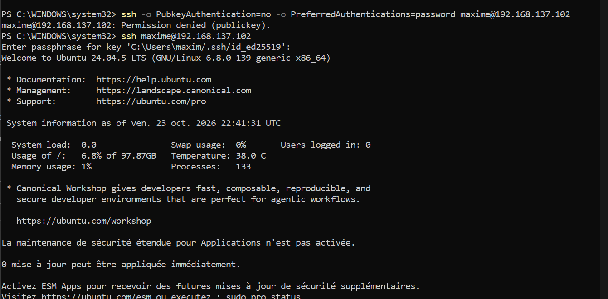
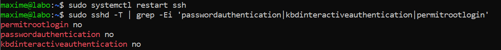
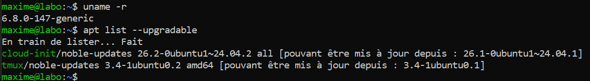
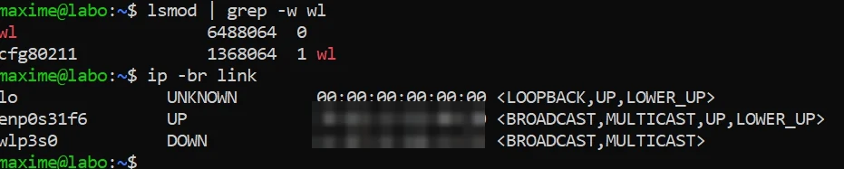
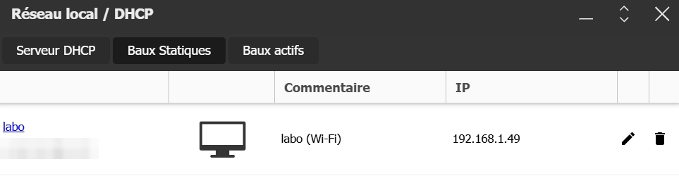
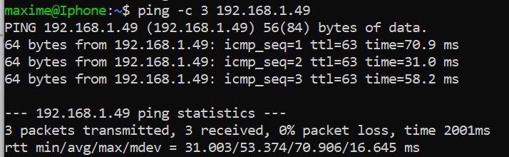
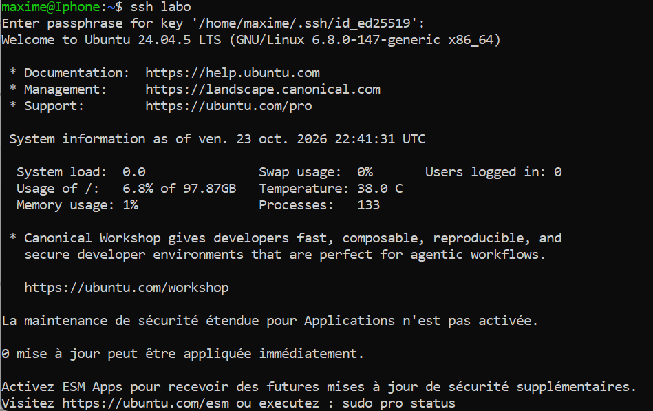
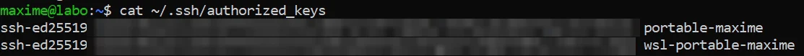

01Objectif
Transformer un ancien PC de jeu qui ne servait plus en serveur Linux administré à distance, sans écran, pour héberger plus tard les outils du projet (audit DNS et HTTPS, base de données, IA locale).
Contraintes :
- budget de 0 € : logiciels libres et offres gratuites ;
- le serveur n'est pas allumé en permanence, je l'allume quand j'en ai besoin ;
- sécurité dès le départ : connexion SSH par clé seulement, rien d'ouvert sur internet.
Pourquoi Ubuntu Server et pas Windows : Windows 11 n'accepte pas officiellement ce processeur (7e génération Intel), et Windows 10 ne reçoit plus de mises à jour de sécurité. Ubuntu Server 24.04 LTS est gratuit et maintenu jusqu'en 2029 (plus longtemps avec Ubuntu Pro, gratuit pour un usage personnel).
02Schéma et technologies
Internet
│
┌─────────┴─────────┐
│ Freebox Pop │ 192.168.1.254
│ DHCP + bail fixe │
└───┬───────────┬───┘
Wi-Fi │ │ Wi-Fi
┌────────────────┴──┐ ┌──┴─────────────────────┐
│ PC portable │ │ Tour « labo » │
│ Windows 11 + WSL2 │ SSH │ Ubuntu Server 24.04 │
│ 192.168.1.58 ├────►│ 192.168.1.49 (fixe) │
│ 2 clés ED25519 │ │ clé SSH seulement │
└───────────────────┘ └────────────────────────┘| Rôle | Technologie |
|---|---|
| Système du serveur | Ubuntu Server 24.04.5 LTS, noyau 6.8 |
| Disque | LVM : 100 Go pour /, 828 Go gardés en réserve |
| Réseau | netplan et systemd-networkd, DHCP avec bail statique sur la Freebox |
| Wi-Fi | Pilote Broadcom wl (paquet broadcom-sta-dkms) et wpa_supplicant |
| Accès à distance | OpenSSH 9.6, clés ED25519 protégées par phrase de passe |
| Poste d'administration | PowerShell (client OpenSSH de Windows) et WSL2 Ubuntu |
Le matériel :
| Élément | Détail |
|---|---|
| Carte mère | ASRock Z270 Pro4 |
| Processeur | Intel Core i5-7600K, 4 cœurs, 3,8 GHz (4,4 GHz en pointe) |
| Mémoire | 16 Go DDR4 2 667 MT/s (4 × 4 Go) |
| Carte graphique | NVIDIA GTX 1060 6 Go (servira à l'IA locale) |
| Disque | Seagate 1 To, disque dur à plateaux |
| Réseau | Intel I219-V (1 Gbit/s, compatible Wake-on-LAN), Broadcom BCM4360 (Wi-Fi) |
03Configuration
Installation
- Clé USB créée avec Rufus à partir de l'ISO officielle, empreinte SHA256 vérifiée avant l'écriture.
- BIOS : virtualisation (VT-x) activée pour plus tard, Fast Boot désactivé.
- Installation sur le disque entier avec LVM, serveur OpenSSH coché.
- Empreinte de la clé SSH du serveur photographiée à la fin de l'installation, pour la comparer à la première connexion.
Réseau
/etc/netplan/60-ethernet.yaml (prise réseau, prête pour le jour où la tour aura un câble) :
network:
version: 2
ethernets:
enp0s31f6:
dhcp4: true
optional: true # sans câble, le démarrage n'attend pas cette carte/etc/netplan/61-wifi.yaml (droits 600 : seul root peut le lire, car il contient la clé du Wi-Fi) :
network:
version: 2
wifis:
wlp3s0:
dhcp4: true
access-points:
"<nom du réseau>":
password: "<masqué>"Sur la Freebox : un bail DHCP statique associe l'adresse MAC de la carte Wi-Fi à 192.168.1.49. Le serveur garde la même adresse, et c'est toujours la box qui distribue les adresses (un seul endroit à gérer).
SSH par clé seulement
- Création d'une clé ED25519 avec phrase de passe sur le poste d'administration (ssh-keygen -t ed25519), une pour Windows et une pour WSL.
- Ajout des clés publiques dans ~/.ssh/authorized_keys sur le serveur.
- Une fois la connexion par clé testée, et seulement après, désactivation des mots de passe dans /etc/ssh/sshd_config.d/01-cle-seulement.conf :
PasswordAuthentication no
KbdInteractiveAuthentication no
PermitRootLogin noLe fichier commence par 01- parce que SSH garde la première valeur lue : ce réglage passe avant un autre fichier qui dirait le contraire. Pendant la modification, j'ai gardé une session SSH ouverte en secours.
Enfin, un raccourci dans ~/.ssh/config (WSL) permet de taper simplement ssh labo.
Mises à jour
sudo apt update && sudo apt full-upgrade
sudo timedatectl set-timezone Europe/Paris
sudo reboot107 paquets mis à jour, dont 80 correctifs de sécurité et un nouveau noyau.
04Tests réussis
| Test | Résultat attendu | Résultat obtenu | Preuve |
|---|---|---|---|
| Première connexion SSH | Empreinte identique à la photo de l'installation | Conforme : SHA256:vVYuE7… | — |
| Connexion par mot de passe | Refusée | Conforme : Permission denied (publickey) | Fig. 1 |
| Connexion par clé | Demande la phrase de passe de la clé | Conforme | Fig. 1 |
| Réglages SSH appliqués | passwordauthentication no, permitrootlogin no | Conforme | Fig. 2 |
| Mises à jour | Nouveau noyau chargé, plus rien d'important à mettre à jour | Conforme : 6.8.0-147-generic | Fig. 3 |
| Carte Wi-Fi reconnue | Pilote wl chargé, carte wlp3s0 présente | Conforme | Fig. 4 |
| Adresse fixe | Bail statique visible dans la Freebox | Conforme : 192.168.1.49 | Fig. 5 |
| Adresse fixe après redémarrage, sans câble ni écran | Le serveur répond sur la même adresse | Conforme | Fig. 6 |
| Connexion depuis WSL | ssh labo fonctionne, 2 clés autorisées | Conforme | Fig. 7, 8 |
















05Problèmes rencontrés et solutions
| Problème | Cause | Solution |
|---|---|---|
| Pas de câble possible entre la tour (à l'étage) et la box (en bas) | Configuration de la maison | Installation sans réseau, puis réseau provisoire (voir les lignes suivantes) |
| Carte Wi-Fi non reconnue à l'installation | La Broadcom BCM4360 n'a pas de pilote libre | Installée plus tard, une fois internet disponible, avec le pilote propriétaire broadcom-sta-dkms (gratuit mais fermé) |
| Partage de connexion de l'iPhone par USB : rien ne se passe | Le câble ne faisait que charger : rien dans lsusb, et rien non plus sur un autre ordinateur | Diagnostic par élimination, puis autre solution : partage de connexion du PC portable par câble Ethernet (connexion partagée de Windows, réseau 192.168.137.0/24) |
| La tour ne reçoit pas d'adresse du portable | Aucun fichier netplan (installation sans réseau), et partage Windows actif sur la mauvaise carte (169.254.x.x = aucune adresse reçue) | Création du fichier netplan, partage réactivé sur la bonne carte, vérifié avec ipconfig |
| Tour joignable depuis Windows mais pas depuis WSL | Le partage de connexion de Windows et le réseau NAT de WSL2 se gênent | Connexion par PowerShell en attendant ; problème disparu une fois la tour sur le réseau de la box |
| Wi-Fi refusé : 4-Way Handshake failed, reason=WRONG_KEY | Faute de frappe dans la clé Wi-Fi | Lecture du journal (journalctl -u netplan-wpa-wlp3s0) : le réseau était bien trouvé, donc la clé était en cause ; corrigée |
| L'adresse du serveur change à chaque redémarrage | Adresse donnée par DHCP sans réservation | Bail statique dans la Freebox |
| Risque d'attente au démarrage sans câble | Une carte réglée en DHCP mais débranchée fait attendre le démarrage | optional: true dans netplan |
Limite connue : le Wake-on-LAN (étape 3) ne fonctionne pas en Wi-Fi. Le serveur devra être relié par câble (boîtier Wi-Fi maillé ou CPL), et le bail statique sera alors refait pour la carte filaire.
06Ce que j'en retiens
- Vérifier l'identité avant de faire confiance : empreinte SHA256 de l'ISO, empreinte SSH du serveur comparée à une photo prise à l'installation.
- Ne jamais se couper l'accès : tester la connexion par clé avant de supprimer les mots de passe, et garder une session ouverte en secours.
- Diagnostiquer par élimination : câble testé sur un autre appareil, adresse 169.254.x.x comprise comme « personne n'a répondu », lecture des journaux pour distinguer « réseau introuvable » et « clé refusée ».
- Protéger les secrets : fichier Wi-Fi lisible par root seulement, aucune clé ni aucun mot de passe dans le dépôt Git.